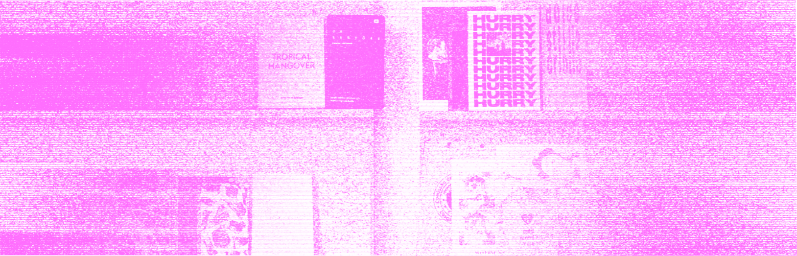

Учебник • Продвижение зинов • Стратегии продвижения
Продвижение зинов
4.1 Стратегии продвижения

2 минуты на изучение
Основные способы распространения зинов:социальные сети, видео, подкасты, рассылки, фестивали, выставки и воркшопы
Зины можно продвигать через разные онлайн и оффлайн-каналы, часто комбинирование этих подходов даёт наилучшие результаты. Среди цифровых каналов продвижения чаще всего используются:
1. Социальные сети
Идеально подходят для визуального контента — там можно показать уникальные страницы зина и процесс его создания
2. Видео
Видеоконтент, например обзоры зинов или демонстрация страниц, помогает вовлечь аудиторию и усилить интерес
3. Подкасты
Подкасты дают возможность рассказать истории, стоящие за созданием зинов, и обсудить идеи с экспертами
4. Почтовые рассылки
Инструмент онлайн-продвижения, через который можно поддерживать интерес читателей к новым выпускам и рассказывать об их уникальных чертах
Используя различные платформы, можно адаптировать контент под их особенности: в соцсетях
показывать уникальный
дизайн и процесс его создания, с помощью видео вовлекать зрителей историями, а рассылками
и подкастами поддерживать связь с аудиторией.
Проработка SMM-стратегии и создание контент-плана — ключевые шаги в продвижении зинов на онлайн-площадках.
Стратегия
помогает определить целевую аудиторию, выбрать подходящие платформы и выстроить системный подход к взаимодействию
с
подписчиками. Контент-план упрощает регулярное обновление страниц, позволяет заранее распределить усилия на
создание
визуального и текстового контента и удерживать интерес аудитории. Такой структурированный подход обеспечивает
последовательность, экономит время и усиливает влияние зинов в цифровой среде.
Офлайн-маркетинг помогает выйти за рамки интернета и взаимодействовать с аудиторией напрямую. Например, участие в фестивалях, выставках и воркшопах, посвященных печатной продукции, позволяет продемонстрировать свои зины новой аудитории и завести полезные связи. Продажа зинов в книжных магазинах и на специализированных ярмарках также привлекает интерес тех, кто ценит независимые проекты и уникальные издания. Такие мероприятия создают пространство для живого общения, которое помогает укрепить эмоциональную связь с будущими читателями. Благодаря комбинации разнообразных каналов продвижения вы можете не только охватить разные аудитории, но и сделать свои зины доступнее и заметнее.